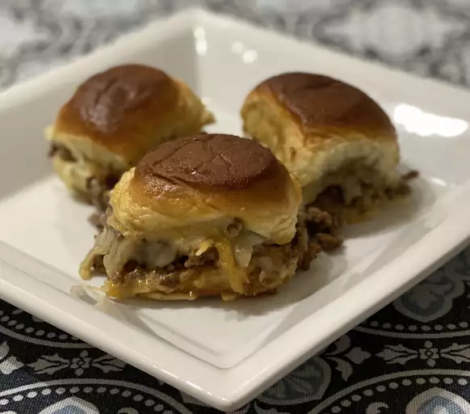

Cheeseburger Sliders

Baked Cheeseburger Sliders
Oven baked cheeseburger sliders are a great party snack.
Ingredients:
- 1 pound ground beef
- 1/2 onion, chopped
- 2 tablesoons ketchup
- 3 teaspoons dijon mustard, divided
- 3 teaspoons worchestershire sauce, divided
- 1/2 teaspoon garlic powder
- salt and ground pepper to taste
- 1 (12 count) package hawaiian bread rolls
- 1 (8 ounce) package shredded monterey jack cheese
- 1/4 cup butter
- 1 tablespoon brown sugar
Steps:
- Preheat oven to 350 degrees and lightly grease an 11x7 baking dish.
- Heat a large skillet over medium heat. Cook ground beef and onion 5-7 minutes then drain. Stir in ketchup, 2 teaspoons mustard, 2 teaspoons worcestershire sauce, and garlic powder. Season with salt and pepper.
- Combine butter, brown sugar, remaining dijon mustard, and remaining worcestershire in a microwavable bowl. Cover loosely and microwave until butter is melted, about 1 minute, then mix and pour over the rolls.
- Bake, covered, for 15 minutes. Uncover and bake until cheese is melted and rolls are golded brown, about 10 minutes.